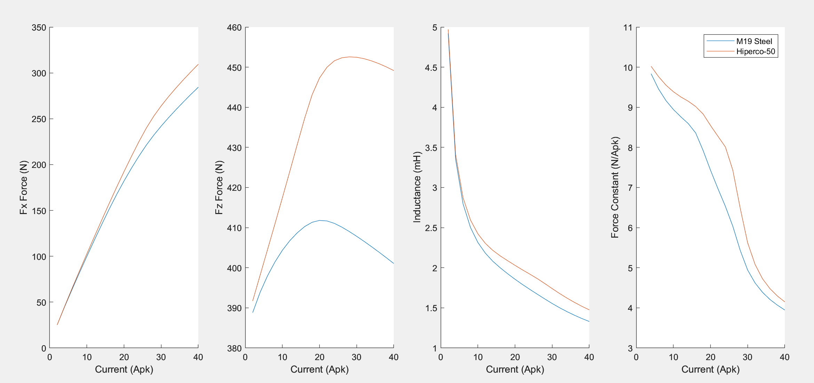

Iron Core Linear Motor FEM Simulation
Updated 06-21-2024
Iron Core Linear Motors are commonly used in industry for servo positioning systems.
Many things are omitted from vendor catalogs and spec sheets that can cause issues in practical application or analytical calculations for mechanical/electrical design work. Most of the omitted things can be computed by FEM if you choose to design your own motor or can reverse engineer an off-the-shelf unit.
FEM Setup and Design Parameters
A parametric model of a typical iron core motor construction was created with MATLAB and FEMM. The typical 3:4 ratio between coils and poles is used. The 3 phase coil currents are computed with sine commutation. While this example shows a moving coil (short coil, long magnet), moving magnet motors (long coil, short magnet) are also common and have similar performance.

1. Magnetic Saturation
Soft magnetic materials have nonlinear properties. Depending on the material, the shapes of the force vs current characteristic and inductance vs current characteristic are impacted.
Force vs current nonlinearity is important as it impacts the plant OLTF if not appropriately compensated and generates much more heat/demand on the amplifier than linear calculations would predict.
Inductance vs current nonlinearity is important as it impacts the time constant of the motor and therefore the current loop OLTF. From the FEM result the phase inductance is computed as flux linkage/current derivative and averaged between the 3 phases. The controller must be adjusted otherwise the current control loop will be unstable at high levels of current. Gain scheduling the current loop is a good method with the typical PI controllers used.
For low speed motors, special cobalt alloys (trade name Hiperco-50 or Hiperco-27) can delay the onset of saturation at a roughly 3x to 10x cost increase over electrical steel. These materials are important in applications where a larger/heavier motor is unacceptable, like aerospace, semiconductor, etc...
2. Air Gap Sensitivity
Due to the nonlinearity of the equations and material properties, the performance is highly dependent on the air gap. With normal machining tolerances (+/-0.1mm) of the supporting parts the force constant, attractive force, and inductance can all vary more than most folks would expect. If tight tolerances can be specified some additional performance can be had by running a very small air gap.
A second consequence of this simulation is knowledge of the "safe handling" height of the magnet tracks where there will be no magnetic pull. For this specific geometry it is around 15mm.
3. Force Ripple
In precision or scanning applications force ripple can impact the servo performance. In addition, for iron core motors there is also attractive force ripple. These ripples can impact the servo tracking and change the deflection of the bearings/stage supporting the motor. The magnetic design can be adjusted to optimize the ripple but in general ironcore will always be worse than ironless. The magnitude of the force ripple is not readily published by commerical motor vendors.
For this design, at 10Apk excitation, the force ripple in X (±15%) and Z (±7%) is relatively large.
Summary
FEM can be used to simulate the performance and nonlinearities of iron core linear motor. Further work could entail optimization of the coils, lamination stack, magnet track, etc... to maximize the motor constant and minimize the moving mass.
Please contact me if you would like the codes used the generate the plots/figures---Thanks for reading